|
Capítulo
5 - Acertando os ponteiros
Ao término da segunda temporada, as coisas não andavam
bem no set de A Nova Geração. O último episódio
produzido, “Shades of Gray”, tornara-se o pior episódio
da série até então – nada bom para o último episódio da
temporada. Além disso, a dança das cadeiras da equipe de
roteiristas custou a saída de dois importantes colaboradores - Tracy
Tormé e Maurice Hurley. Sem um chefe para a equipe de roteiristas
definido, o trabalho de produção de roteiros para a nova
temporada simplesmente não andava. Foi então que Michael Wagner,
que estava temporariamente comandando a criação dos roteiros,
convidou um amigo com quem havia trabalhado na série “Probe”
para escrever um roteiro. Este homem viria a se tornar responsável
por reformular totalmente o modo de se produzir um episódio de Jornada
nas Estrelas. Seu
nome: Michael Piller.
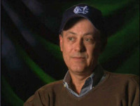 A
partir de uma história sua e de Wagner, Piller escreveu o roteiro
de “Evolution”. Por iniciativa própria, Piller incluiu
na história uma trama sobre o retorno da Dra. Beverly Crusher,
mesmo sem saber ao certo em que ponto da temporada seu episódio
seria incluído. Terminado o trabalho, Piller se encaminhou para
a Paramount, onde se encontraria com Rick Berman e Gene Roddenberry.
“Eu
posso contar como ouvi a voz de Gene pela primeira vez”, conta
Piller. “Eu estava andando no terreno do estúdio, tendo
entregue meu primeiro roteiro para a série, e estava vindo anotar
os comentários dos produtores, algo normal para um escritor
free-lance. Ao entrar no prédio, escuto uma voz retumbante
dizendo: ‘Não há alienígenas suficientes neste show!’. Essa
foi a minha introdução a Gene Roddenberry.”
Esta
alegação de que não havia alienígenas o suficiente no show se
mostraria o único empecilho para a finalização do roteiro. Gene
acreditava que o personagem do cientista que vê o projeto de uma
vida se perder em virtude de um mau funcionamento da Enterprise
deveria ser alienígena. Porém, Piller havia escrito um discurso
para o final do episódio, no qual faz analogia com um jogo de
baseball, e todos na equipe pareciam gostar deste discurso, em
especial Rick Berman – que, assim como Piller, é um grande fã
do esporte. Se o personagem fosse um alienígena, não haveria
como incluir este discurso.
“Rick
Berman foi maravilhoso naquela reunião. Ele foi bastante político
e argumentou com Gene, e no final o cientista voltou a ser humano,
afinal”, relembra Piller.
Tendo
vendido o roteiro, Piller acreditava que sua participação na série
havia terminado. Ledo engano. “Meu roteiro era o único sobre o
qual havia um consenso e que todos gostavam. Então, fui chamado
por Rick e Gene, que me disseram: ‘Seu roteiro é muito bom, e
obviamente você sabe escrever para esta série. Gostaria de
comandar a equipe de roteiristas?’ E lá estava eu!”
A terceira temporada de A Nova Geração, se mostraria, porém,
o maior desafio da carreira de Piller até então.
Em
busca de roteiros
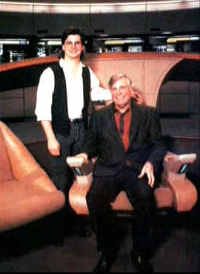 O
primeiro problema de Piller foi lidar com a falta de roteiros para
a temporada cuja produção já se iniciara. Em busca de idéias,
Piller começou a vasculhar todas as propostas recebidas nos anos
anteriores de roteiristas free-lancers, tentando encontrar
qualquer coisa que pudesse ser trabalhada em forma de roteiro.
Dentre as inúmeras propostas que analisou, uma lhe chamou a atenção.
A história falava de um garoto que não consegue superar a morte
da mãe e acaba recriando-a no holodeck. Gene tinha restrições
quanto à trama. “É um roteiro muito bom, mas não funciona”,
dizia. “No século 24, os filhos não lamentam a morte dos pais.
A morte é considerada como parte da vida.” Piller então
apresentou uma nova proposta. E se o garoto realmente se mostrasse
apático quanto à perda da mãe – algo muito estranho de se
assistir – e Troi tivesse de faze-lo lidar com essa perda? Gene
gostou a idéia, e aprovou seu desenvolvimento, que eventualmente
se tornou o episódio “The Bonding”. O autor do roteiro
era um jovem inexperiente que eventualmente se tornaria parte da
equipe de roteiristas de A Nova Geração e Deep Space
Nine, e seria considerado por muitos como o melhor roteirista
da história de Jornada. Seu nome: Ronald D. Moore.
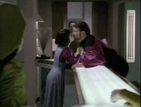 Simultaneamente,
Piller adotou uma abordagem pouco ortodoxa. A produção da série
passou a aceitar propostas de roteiros de qualquer pessoa, mesmo
amadores que não possuíssem agente ou advogados. Esta política
– única em Hollywood até então – traria mais um nome de
talento para a equipe: René Echevarria. Echevarria era até então
um garçom em Nova York, que criou um roteiro onde Data criava
para si uma filha. Piller se encantou com a idéia, e sugeriu
apenas uma mudança, seguindo sua nova filosofia sobre o que
deveria ser um roteiro de Jornada. “O roteiro de
Echevarria, apesar de bastante sólido, se concentrava demais na
personagem convidada, e não em data. Disse a ele que deveria
reescrever a trama, transformando-a em uma história sobre Data.
Qualquer trama, qualquer personagem da semana, deve trabalhar de
forma a explorarmos os personagens principais”, conta Piller. O
roteiro reescrito se tornou “The Offspring”.
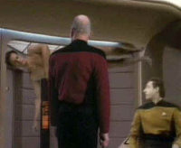 Piller
também criou a sistemática de reuniões diárias com toda a
equipe de roteiristas, nas quais os projetos de todos eram
discutidos, de modo que todos pudessem ajudar e colaborar com idéias
nos roteiros dos colegas. Destas reuniões surgiram conceitos que
se tornariam episódios bastante populares entre os fãs. “A
Enterprise entra em um wormhole e de repente Tasha Yar está na
ponte” (“Yesterday’s Enterprise”), “Q perde seus
poderes se fica preso na Enterprise” (“Deja Q”),
“um tripulante tem problemas de se relacionar com a tripulação
e recria suas imagens no holodeck” (“Hollow Pursuits”).
Com
Piller no comando, aos poucos a série foi encontrando seu rumo, e
apresentando episódios cada vez melhores. Sua filosofia de que
cada episódio deveria mostrar o desenvolvimento da equipe
principal da nave criaria oportunidades de desenvolvimento para
todos – em especial, Worf e Picard.
Acertando
o tom
Ao
longo da temporada, com o aprofundamento dos roteiros, muitas
mudanças começaram a surgir nos próprios personagens. Logo no
início da temporada, com o retorno de Gates MacFadden ao papel de
Beverly Crsher. Gates deixara a produção da série ao final da
primeira temporada, descontente com o desenvolvimento de seu
personagem. Após uma longa campanha por cartas, durante o segundo
ano, Gene decidiu trazê-la de volta, com a promessa de que seria
dado um novo rumo à doutora. “Diane Muldaur é uma atriz
maravilhosa, e é óbvio que acredito nisso, pois trabalhei com
ela várias vezes,” disse Roddenberry. “Mas tudo é química.
Beverly tem aquela coisa a mais... de algum modo, o relacionamento
do capitão com ela funciona muito melhor. Funcionava com Muldaur
também, mas parece funcionar um pouco melhor com Crusher”.
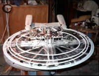 Seu
retorno à nave, conforme o roteiro escrito por Piller, já
sinalizava estas mudanças de rumo para a personagem. Após passar
um ano fora, Beverly tem dificuldades em adaptar seu
relacionamento com Wesley, após este ter passado todo o período
trabalhando na nave como alferes, e ter desenvolvido
responsabilidades e sua própria autonomia. Assim, Beverly
deixaria de ser apenas a “mãe de Wesley”, e se tornaria um
membro da equipe, e importante apoio para Picard.
Picard
também começaria a sofrer um desenvolvimento diferente nesta
temporada. A bíblia da série deixava claro que o capitão da
nave não poderia se colocar um uma posição de risco, o que
limitava a sua participação nas tramas. “Eu fazia apenas três
coisas: dava ordens na ponte, falava com a tela ou ficava em minha
sala de leitura”, lembra Patrick Stewart. “De qualquer modo,
tudo o que Picard fazia era falar – e isso estava começando a
deixar o personagem empacado.” O segredo foi encontrar formas de
colocar o capitão no centro da ação sem desrespeitar esta máxima.
O primeiro modo encontrado tornou-se “Captain’s Holiday”,
onde Picard, durante férias, se envolve na disputa por um
artefato arqueológico.
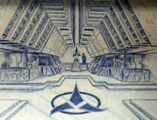 Se
algum personagem efetivamente encontrou sua voz na terceira
temporada, foi Worf. Na primeira temporada, Worf não tinha uma
função específica. Na segunda, como chefe de segurança, ele
encontrara uma atividade muito mais afim com sua herança Klingon.
Porém, até então, tudo o que esse herança trazia à série era
a frustração de Worf em ter de ficar esperando antes de disparar
os torpedos. Piller, porém, acreditava que havia uma grande
oportunidade com Worf e seu sangue Klingon, e passou a abordar o
personagem de uma forma completamente diferente, assustando a
todos na equipe e até mesmo Michael Dorn. Em “The Enemy”,
Worf é o único em toda a nave com sangue compatível com o de um
Romulano ferido que está à bordo. No rascunho original, Worf
doaria o sangue. Piller, co-autor do roteiro, achou que Worf, como
Klingon, se recusaria a doar o sangue. Os Romulanos haviam sido
responsáveis pela morte dos seus pais, e Worf, dando vazão à
honra Klingon, jamais consentiria com esta transfusão. A sua
frase, “então que ele morra”, foi controversa na época, mas
Dorn acabou entendendo o ponto de vista de Piller – este é um Klingon,
seus valores são diferentes dos humanos.
Esta
abordagem “alienígena” para o personagem renderia ainda um
grande episódio, “Sins of the Father”, no qual Worf não
apenas conhece seu irmão, mas também viaja até K’onos e tem o
nome da família desonrado.
Outras
melhorias
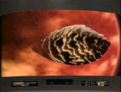 Dan
Curry, supervisor de efeitos especiais da série, diz que na
terceira temporada a equipe descobriu novos modos de realizar os
mesmos efeitos, conseguindo uma qualidade final melhor. E esse é
outro diferencial desta terceira temporada. A qualidade visual dos
efeitos é muito superior ao das temporadas anteriores. E alguns
dos efeitos solicitados pelos roteiros não eram em nada simples:
um ser vivo do tamanho da Enterprise (“Tin Man”), em
wormhole dentro do qual emerge a Enterprise-C (“Yesterday’s
Enterprise”), a Enterprise se escondendo de um cubo Borg em
uma nebulosa (“The Best of Both Worlds”).
Muito
do trabalho foi facilitado pela construção de modelos em menor
escala, incluindo a Enterprise-D, que permitiam maior mobilidade
da nave em tela. Outras técnicas inovadoras foram empregadas –
como o uso de nitrogênio líquido para a filmagem de cenas que
envolviam nebulosas ou wormholes.
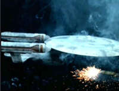 A
própria Enterprise-C, vista em “Yesterday’s Enterprise”,
foi um desafio conceitual à parte. Mike Okuda havia criado a
filosofia de que qualquer nave de Federação vista em tela que
fosse mais antiga que a Enterprise-D deveria trazer elementos das
naves vistas no filme. No caso específico da Enterprise-C, Okuda
e Rick Sternbach esforçaram-se em criar um amálgama entre a
Excelsior e a Enterprise-D. O resultado, ainda que tendo sido
visto apenas neste episódio, foi impressionante.
Ao
mesmo tempo em que buscavam soluções para os problemas de concepção
visual da série, Okuda e Sternbach eram cada vez mais solicitados
por Michael Piller a explicarem detalhes funcionais do universo de
Jornada. Esta consultoria, que já existia em menor escala
nas temporadas anteriores, possibilitou a inclusão do nome de
ambos nos créditos da série, como consultores técnicos.
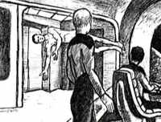 Alguns
efeitos que, vistos em tela, parecem bastante simples, tiveram sua
própria carga de problemas logísticos. O roteiro de “Deja
Q” dizia que Q apareceria flutuando nu na ponte da
Enterprise. Para conseguir o efeito, John de Lancie passou várias
horas em frente a uma tela azul, completamente nu. Os técnicos
inverteriam a imagem depois, dando a impressão de que Q estivesse
deitado no ar. “Mas, para conseguir isso, todo o tempo de tela
azul tive de manter os braços levantados, como se estivesse dançando
o Ula-Ula!”, conta de Lancie.
Mas
as dificuldades com a cena não terminavam aí. Para mesclar Q na
cena filmada na ponte, era necessário posicionar exatamente a
cabeça de Patrick Stewart, de modo que a genitália de Q ficasse
encoberta. Todo este trabalho por apenas poucos segundos de tela!
Atendendo
às constantes reclamações dos atores, Robert Blackman criou um
novo uniforme para a equipe da nave, substituindo o macacão usado
nas duas primeiras temporadas. Apesar de resolver alguns problemas
do modelo antigo (que eram quentes, justos e provocavam dores nas
costas dos atores), algumas reclamações continuaram a existir,
principalmente de Patrick Stewart, que sempre ajustava a posição
de seu uniforme em cena (a famosa “manobra Picard”). Saiba
mais sobre os uniformes usados na série clicando aqui.
O
Melhor de Dois Mundos
Ao
ser contratado, Michael Piller dissera à Rick Berman e Gene
Roddenberry: “Olha, o meu desejo é ficar em Miami e escrever
roteiros para filmes. Fico com você por um ano.” Tendo assinado
um contrato por um ano apenas, Piller começou a ver o término da
temporada com sentimentos conflitantes. Enquanto trabalhava no
roteiro de “The Best of Both Worlds”, Piller se sentia
tentado a permanecer na série, apesar de considerar que o cinema
seria uma carreira que lhe agradaria mais. Estes sentimentos
acabaram incluídos no roteiro, onde Riker tem a oportunidade de
se tornar capitão de sua própria nave (seu sonho de carreira),
mas prefere ficar na Enterprise.
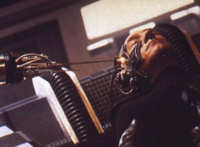 Com
a perspectiva de sua partida, Piller decidiu que seu último
roteiro deveria ser o seu melhor, e terminar a temporada com um
estrondo. Assim, não apenas trouxe os Borgs de volta (vistos
anteriormente em “Q-Who”, da segunda temporada), como
transformou Picard em um deles. A cena final do episódio, com
Riker mandando Worf disparar contra a nave Borg e, por conseqüência,
em Picard, se tornou o melhor final de temporada de toda a
franquia.
Com
o roteiro finalizado, e o episódio já em pré-produção, Piller
foi contatado por Gene Roddenberry. “Veja, essa série precisa
de mais um ano para realmente pegar fogo. Significaria muito para
mim se você voltasse para mais um ano.” Para Piller, emocionado
com o fato de Gene lhe fazer o convite, não precisou muito para
ele se decidir a retornar na temporada seguinte.
Ao
fazer isso, porém, Piller teria de encarar um desafio muito
grande: escrever a conclusão de “The Best of Both Worlds”.
“Eu achei que não voltaria, havia escrito o roteiro sem pensar
em nenhum momento em como faria para terminá-lo”, relembra
Piller. “Eu não sabia como derrotar os Borgs, achei que seria
trabalho para outra pessoa! Eu havia criado um problema sem solução!”
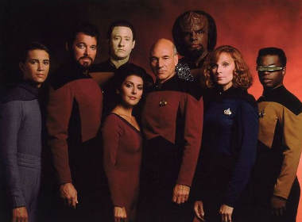
|